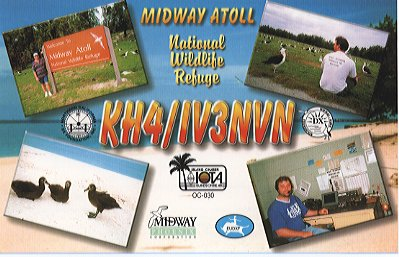

Flash ! DX
|
Who said 6M was a dead band ?
|
(注)
このReportをご覧になる方へ
[Back Issues Apr.2017]
TIME:UTC(JST-09:00)
Report from JA1RJU(PM95sq)
30.Apr.2017(15:00b)
Report from JA1RJU(PM95sq)
29.Apr.2017(15:00b)
Report from JA1RJU(PM95sq)
28.Apr.2017(15:00c)
VK4RTL/b 05:24- 50.282 CW Beacon RST559
BV3UF 09:00 50.097 RTTY into JA1-DS3CHK
Report from JA1RJU(PM95sq)
27.Apr.2017(15:00b)
Report from JA1RJU(PM95sq)
26.Apr.2017(15:00c)
DS3CHK 09:43 50.276 WSJT JT65a CQ -14dB into PM95
DS3CHK 10:04 50.276 WSJT JT65a CQ -16dB into PM65
Report from JA1RJU(PM95sq)
25.Apr.2017(15:00b)
(IW5DHN 07:53 50.191 WSJT JT65a EME QSO-17dB de JR6EXN)
Report from JA1RJU(PM95sq)
24.Apr.2017(15:00b)
Report from JA1RJU(PM95sq)
23.Apr.2017(15:00b)
Report from JA1RJU(PM95sq)
22.Apr.2017(15:00b)
Report from JA1RJU(PM95sq)
21.Apr.2017(15:00c)
BU2BV 07:02 50.276 WSJT JT65a CQ -22dB PL05 into PM95
BU2BV 07:08 50.276 WSJT JT65a -09dB QSO with JR2(PM85)
BU2BV 07:10 50.276 WSJT JT65a -08dB into JA1(PM95)
Report from JA1RJU(PM95sq)
20.Apr.2017(15:00b)
Report from JA1RJU(PM95sq)
19.Apr.2017(15:00b)
Report from JA1RJU(PM95sq)
18.Apr.2017(15:00b)
|
◎日本海の中心部を北上中の低気圧から伸びる寒冷前線が関東地方を通過した午前6時前後に関東沿岸の神奈川、千葉などでは風速も25m以上を観測した。内陸部の東京西部では風雨による”春の嵐”の影響ほとんど見られなかった。
前線が通過した関東地方では日中の気温が急上昇し、東京都心では25.7度と、4月としては19年ぶりの3日連続の”夏日”となった。この日、群馬県高崎市では日中の気温は30度超えた。
西日本から1400JST前後にVK4RTH/VK4RTLのBeaconの入感がリポートされたが、この時間のBeaconはJA1(PM95)では確認出来なかった。
|
Report from JA1RJU(PM95sq)
17.Apr.2017(15:00b)
|
◎午前中には西日本通過中の低気圧は、明日の早朝には関東地方への影響も懸念されている。
今日の関東地方は日中の気温が25度を超える”夏日”となったが、明日はこの天候も急変、雨量180m/mの雨と最大23mを超える強風が吹き荒れる”春の嵐”となりそう。今日は早めにアンテナをクランクダウンしてのワッチとなった。
|
Report from JA1RJU(PM95sq)
16.Apr.2017(15:00b)
Report from JA1RJU(PM95sq)
15.Apr.2017(15:00b)
Report from JA1RJU(PM95sq)
14.Apr.2017(15:00b)
Report from JA1RJU(PM95sq)
13.Apr.2017(15:00b)
Report from JA1RJU(PM95sq)
12.Apr.2017(15:00b)
Report from JA1RJU(PM95sq)
11.Apr.2017(15:00b)
Report from JA1RJU(PM95sq)
10.Apr.2017(15:00b)
Report from JA1RJU(PM95sq)
09.Apr.2017(15:00c)
VK4RTL/b 04:50- 50.282 CW Beacon RST599
VK2RHV/b 05:10- 50.288 CW Beacon RST579
Report from JA1RJU(PM95sq)
08.Apr.2017(15:00b)
|
◎Midway and Kure Islands are Now Deleted DXCC Entities (03/31/2017=ARRL)
 
|
Report from JA1RJU(PM95sq)
07.Apr.2017(15:00b)
(S59A 14:49 50.190 WSJT JT65a into JR6EXN)
Report from JA1RJU(PM95sq)
06.Apr.2017(15:00b)
(G8BCG 12:08 50.187 WSJT JT65a EME QSO with JR6EXN=-24dB)
Report from JA1RJU(PM95sq)
05.Apr.2017(15:00b)
(S59A 12:08 50.187 WSJT JT65a EME QSO with JR6EXN=-25dB)
Report from JA1RJU(PM95sq)
04.Apr.2017(15:00b)
Report from JA1RJU(PM95sq)
03.Apr.2017(15:00b)
Report from JA1RJU(PM95sq)
02.Apr.2017(15:00d)
(A31MM 05:00 50.115 CW QSO with JA1-6)
VK4RTL/b 05:04- 50.282 CW Beacon RST599
VK4TVL/b 05:15- 50.295 CW Beacon
VK8RAS/b 05:55- 50.046 CW Beacon RST579
(SM0NKZ 07:34 50.187 WSJT JT65a EME QSO with JR6EXN=-24dB)
Report from JA1RJU(PM95sq)
01.Apr.2017(15:00b)